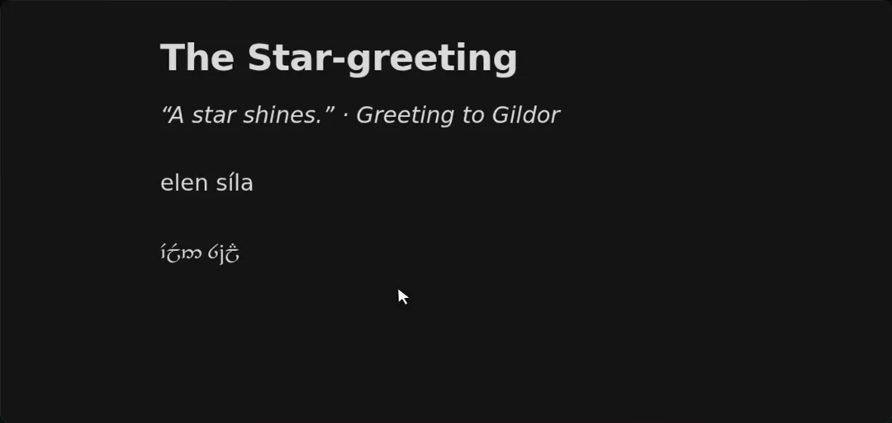
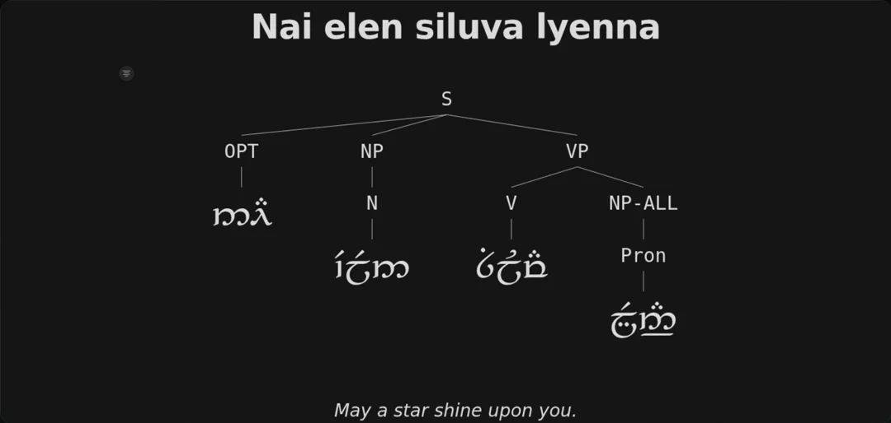
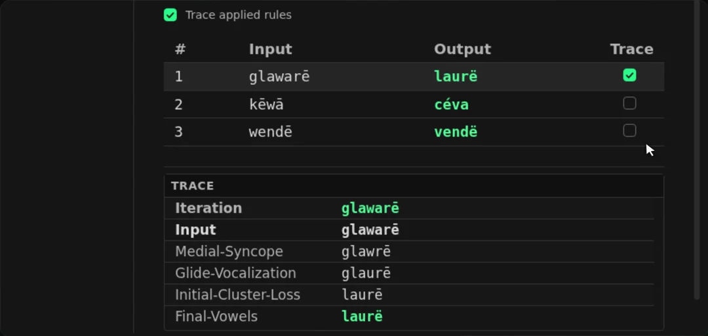
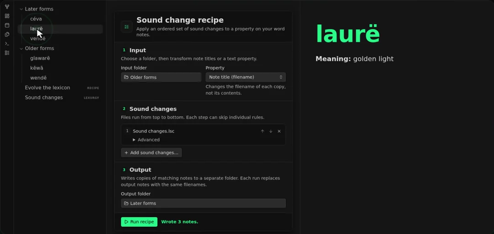

Writing systems
Drop a font into your vault and use it for a line, a table cell, or an entire note.
Using custom fonts
An Obsidian plugin for conlangers
Write in your own scripts. Edit syntax trees. Run sound changes across your lexicon. All without leaving your vault.
Desktop Obsidian 1.15+ Open source Local-first

Features
Fonts, sound changes, and grammar tools that work with your existing Markdown notes.
Drop a font into your vault and use it for a line, a table cell, or an entire note.
Using custom fonts
Edit sound changes with syntax highlighting, test words, and trace the rules that applied. Lexurgy runs locally.
Set up Lexurgy
Apply sound changes to note titles or properties in batches. Recipes write copies to another folder and leave your originals alone.
Run a recipe
Create and edit trees directly in your notes, including custom fonts on their labels.
Make a syntax treeTrailer
A 41-second tour filmed in Obsidian. Silent by design.
Get started
Install Langscape from Community plugins, then open the quick start for your first font, rule, or tree.